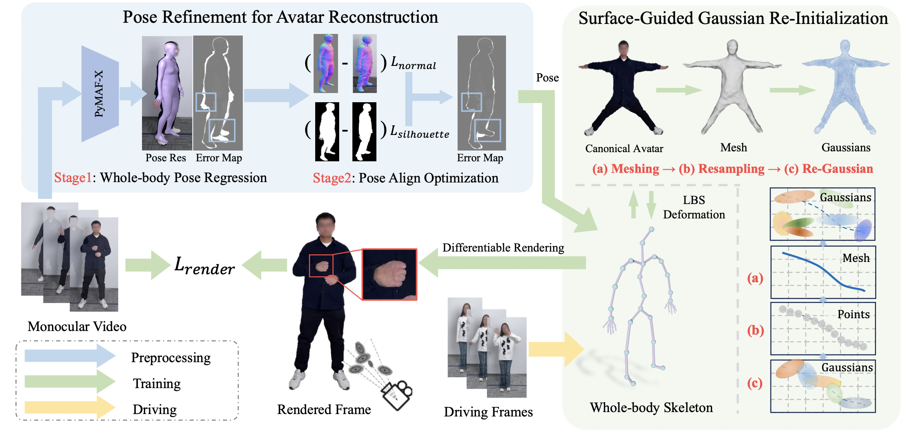

The framework utilizes a monocular video to obtain refined body and hand poses. The Gaussian avatar model is adjusted based on the whole-body skeleton to match the pose in the image. Consistency with image observations is maintained through differentiable rendering and optimization of Gaussian properties. An surfaceguided re-initialization mechanism enhances rendering quality and Gaussian point distribution. The model can adapt to new poses from videos or generated sequences.
@article{liu24-GVA,
author = {Liu, Xinqi and Wu, Chenming and Liu, Jialun and Liu, Xing and Zhao, Chen and Feng, Haocheng and Ding, Errui and Wang, Jingdong},
title = {GVA: Reconstructing Vivid 3D Gaussian Avatars from Monocular Videos},
journal = {Arxiv},
year = {2024},
}